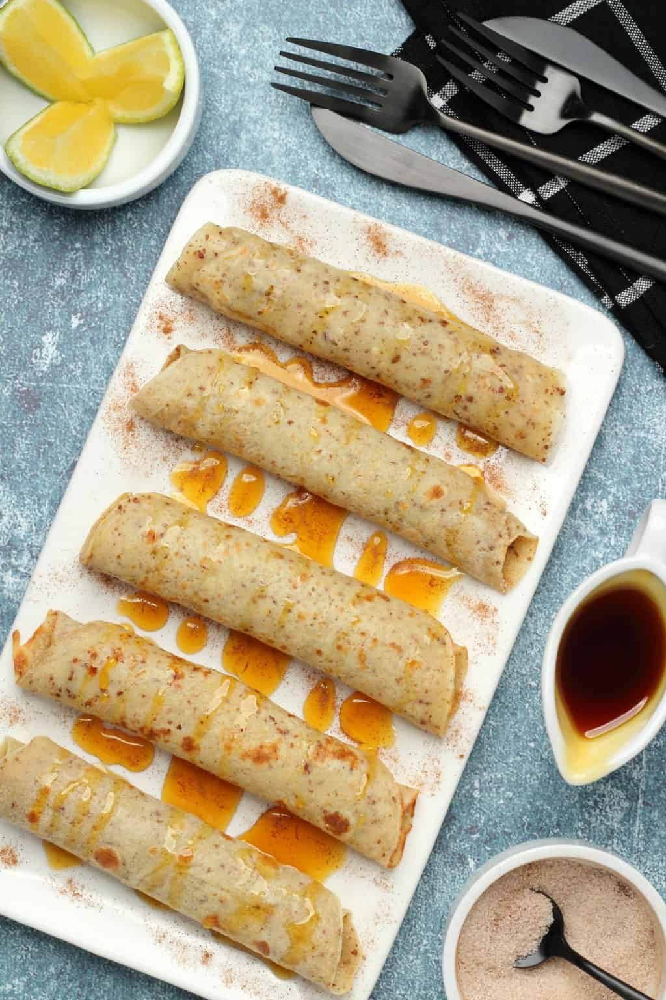

Vegan Crepes

Yummy vegan crepes that only have four ingredients.
You'll love this vegan recipe and won't be hurting animals by making it.
- Flour
- Ground flax seeds
- Almond milk
- Pinch of salt
- Mix 3 tablespoons of water with 1 tablespoon of flax meal
- Add 125g of flour to mixing bowl
- Add pinch of salt to flour
- Whisk dry ingredients
- Add 250ml of almond milk and flax egg to mixing bowl
- Whisk to combine
- Fry 1/4 to 1/3 cup at a time